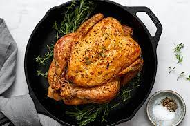

Image Page
My Intro
TABLES
BACKGROUND
MY UNORDERED
ORDERED
PROTEINS
These are foods that are very nutricious to our bodies nutritionist actually say that they build the body and with that we have some examples.This contents below have been hand chosen by the very best in their fields thats why the class has chosen this contents.
1-BEANS
Beans are the seeds from flowering plants in the fabaccea family and are classified as legumes.There are 20 amino acidsand nine of these are very important and essential.However all the types of beans except Soyabeans contain all nine amino acids.People can combine incomplete proteins,with nuts ,seeds,dairy products,or grains at a single meal or trhough out there diet
II-EGGS
 The incredible egg is an extremely popular protein that goes well with virtually any dish.With 6 grams of proteins and 13 essential vitamins and minerals including brain -healthycholine and vitamin D .One large egg boasts a preety impressive nutrient profile.Since the 2015 diatry guidelines for americans did away with cholestrol recommendations ,there are zero reasons to avoid eggs
The incredible egg is an extremely popular protein that goes well with virtually any dish.With 6 grams of proteins and 13 essential vitamins and minerals including brain -healthycholine and vitamin D .One large egg boasts a preety impressive nutrient profile.Since the 2015 diatry guidelines for americans did away with cholestrol recommendations ,there are zero reasons to avoid eggs
III-COTTAGE CHEESE
p>tastes great paired with fruits but you can get creative with it but you can get creative with it .TRY sneaking it into foods that are other wise low on proteins ,like a cottage cheese pancake or tooped on toast instead of your go-to avocado.And at roughly 12g of protein and 100 calories per 1/2 cup it's a satisfying midday snack and a great source of calcium.
IV-CHICKEN
Chicken can stand alone as the base of a dish or it makes a great addition on salads,soups and tacos quesadillas ,grain bowls -you name it !Harbsreet says chicken thighs are one of her most frequently used proteins for stir-fries pasta dishes,grilling ,salad,or other mixed dishes.Sick of your chicken dish.Make things exiting again with one of your high protein chicken recepies.